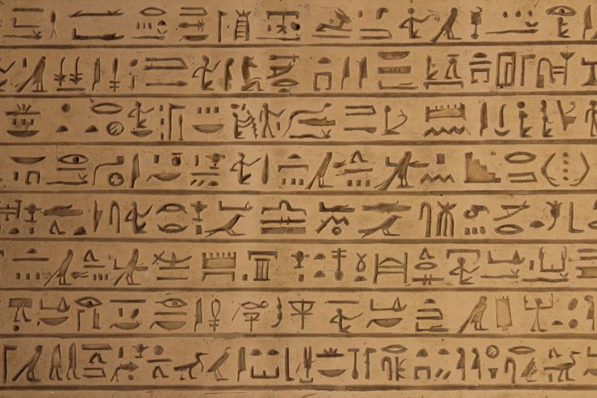
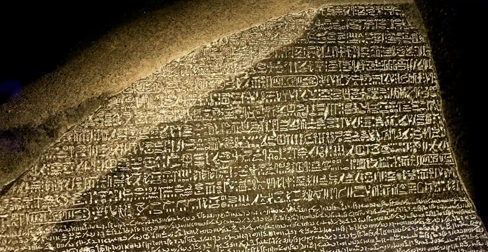
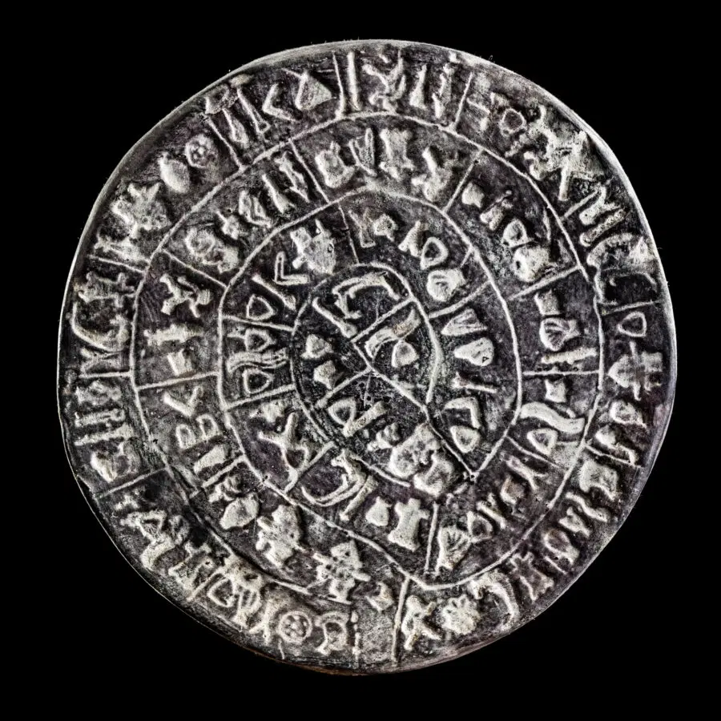
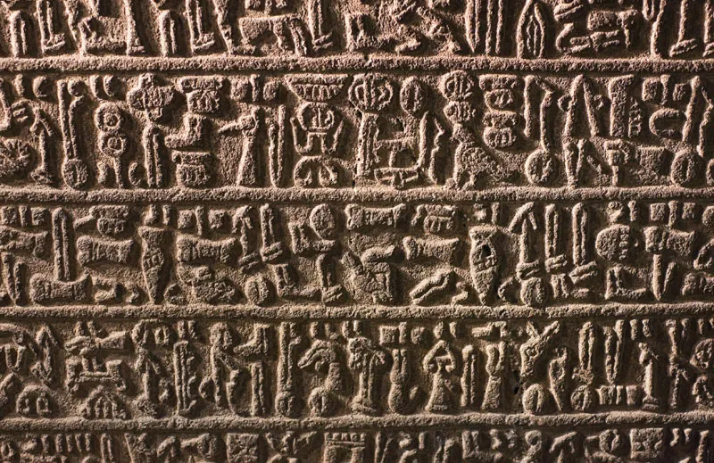
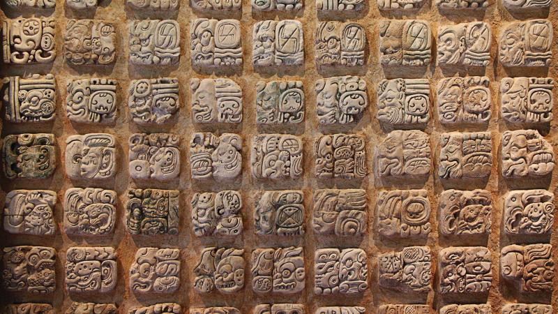
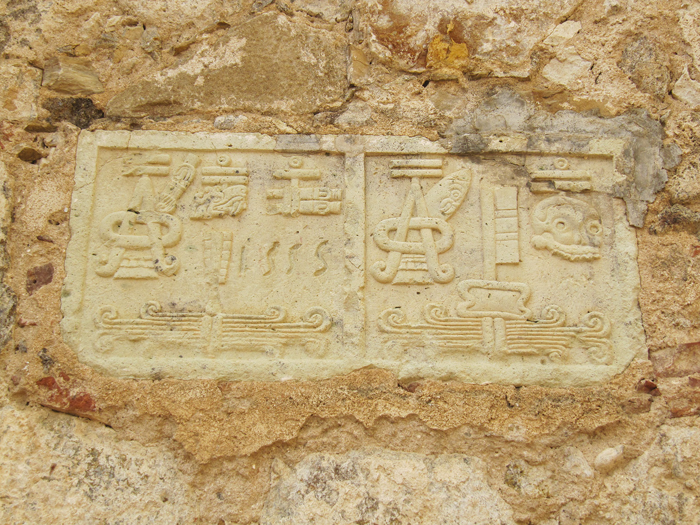
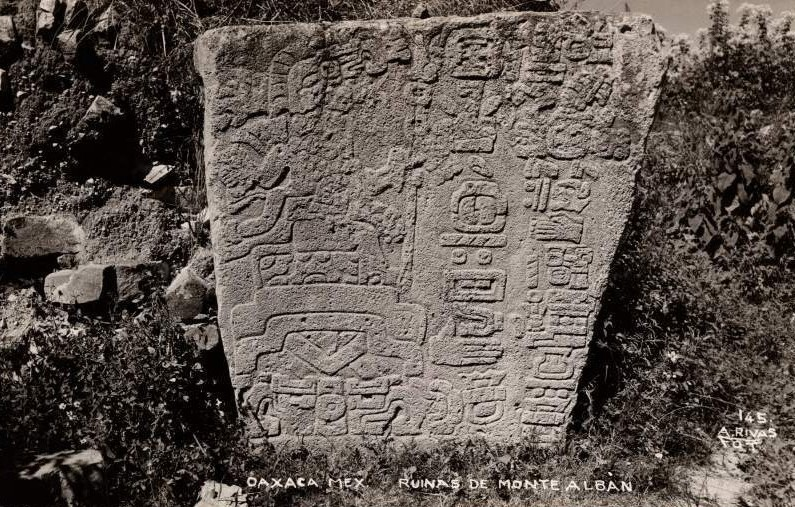
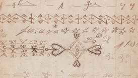

Hieroglyphics Around The World
Definition
The word “hieroglyph” comes from the Greek word ἱερογλυφικός (pronounced hieroglifikos). This is a combination of the Greek words “hiero” meaning holy or sacred and “glypho” meaning writings or carvings. So “hieroglyph” literally means “sacred writings”.
It's confusing. “Hieroglyph” actually refers to any form of picture writing. It just so happens that the most well-known form of hieroglyph writing belongs to the Ancient Egyptians. Ancient Anatolian, Mayan, Aztec, and even Chinese writings also appeared in picture or “hieroglyph” form.
"Hieroglyphics", however, refers to the collection of hieroglyphs as a writing system.
Different Types Of Hieroglyphics
Mesopotamian Hieroglyphics
Egyptian Hieroglyphics
Egyptian hieroglyphics are one of the world's oldest writing systems, developed around 3200 BCE in ancient Egypt. The term “hieroglyph” comes from Greek words meaning “sacred carving,” reflecting how these symbols were often engraved on temple walls, tombs, and monuments. Hieroglyphs combined pictures of real objects—such as animals, plants, and tools—with abstract signs. They could function in several ways: as logograms representing whole words, phonograms representing sounds, or determinatives that clarified meaning. This flexibility made the system rich and expressive, but also complex. Hieroglyphic texts could be written in rows or columns and read in different directions, depending on how the symbols faced.
For centuries, the meaning of hieroglyphics was lost after the decline of ancient Egyptian civilization. The breakthrough came in 1822, when French scholar Jean-François Champollion deciphered the script using the Rosetta Stone, which contained the same text in Greek, Demotic, and hieroglyphs. This discovery opened the door to understanding Egyptian history, religion, and daily life directly from original sources. Today, hieroglyphics remain a powerful symbol of ancient Egypt and a key tool for Egyptologists studying one of humanity's most influential civilizations.

Rosetta Stone - Decoding Egyptian Hieroglyphs
The Rosetta Stone is a key artifact in understanding Egyptian hieroglyphics. Discovered in 1799 near the town of Rosetta (Rashid) in Egypt, it is a granodiorite stele inscribed with the same text in three scripts: Egyptian hieroglyphs, Demotic (a later Egyptian script), and Ancient Greek. Because scholars could still read Greek, the stone provided the crucial linguistic bridge needed to decode hieroglyphs, which had been a mystery for over a millennium.
The breakthrough came in 1822 when French scholar Jean-François Champollion used the Greek text to identify the phonetic values of hieroglyphic symbols, proving that the script was not purely symbolic but could represent sounds as well as ideas. The Rosetta Stone thus unlocked the language of ancient Egypt, allowing historians to read inscriptions on temples, tombs, and monuments. Its discovery fundamentally transformed our understanding of Egyptian history, religion, and society, making hieroglyphs accessible to modern scholarship for the first time.

Cretan Hieroglyphics
Cretan writing refers to the early writing systems used on the island of Crete during the Bronze Age, especially by the Minoan civilization (2000 - 1400 BCE). The earliest system is known as Cretan hieroglyphs, which appeared on seals, clay tablets, and ritual objects. Despite the name, these symbols are unrelated to Egyptian hieroglyphs; they are a distinct local system using pictorial signs. Later, the Minoans developed Linear A, a more abstract, linear script likely used for administrative and religious purposes. Both systems show that Minoan society was highly organized, with complex economic and political structures.
Unlike Egyptian hieroglyphics, Cretan scripts remain largely undeciphered. Linear A, in particular, has resisted all attempts at full interpretation because the underlying Minoan language is unknown and there is no bilingual text comparable to the Rosetta Stone. Scholars can identify numbers, accounting formulas, and some place names, but the meaning of most texts is still unclear. Around 1450 BCE, Linear A was replaced by Linear B, which was adapted by Mycenaean Greeks and later deciphered as an early form of Greek. As a result, Cretan writing represents both one of the greatest mysteries of ancient linguistics and a crucial step toward later Greek literacy.

Anatolian Hieroglyphics
Anatolian refers to a group of ancient languages and writing traditions used in modern Turkey from the Bronze Age into the early Iron Age. These languages—including Hittite, Lycian, Carian, and others—belong to the Anatolian branch of the Indo-European family. Writing in Anatolia was shaped by both local innovation and foreign influence, resulting in multiple scripts used side by side. One of the most distinctive was Anatolian (Hittite) hieroglyphs, a pictorial script carved on stone monuments, seals, and reliefs, mainly for public and royal inscriptions. Other Anatolian languages later adopted alphabetic scripts derived from Greek or Phoenician.
Anatolian inscriptions reveal a politically fragmented but culturally connected region, where city-states and kingdoms expressed authority, religion, and lineage through writing. Although not all Anatolian languages are fully understood, many inscriptions have been deciphered and provide insight into local traditions, power structures, and interactions with neighboring civilizations such as Mesopotamia, Egypt, and Greece.

Hittite Hieroglyphics
Hittite was the language of the Hittite Empire, which dominated much of Anatolia between roughly 1650 and 1200 BCE. The Hittites adopted cuneiform writing from Mesopotamia, using it to record their own language as well as Akkadian, the diplomatic lingua franca of the time. Hittite cuneiform tablets include laws, treaties, myths, prayers, and administrative records, many found in the capital city of Hattusa.
The decipherment of Hittite in the early 20th century was a major breakthrough, revealing it to be the oldest known written Indo-European language. These texts transformed modern understanding of early Indo-European history and show a highly organized state with complex legal, religious, and diplomatic systems.
Mesoamerican Hieroglyphics
Mayan Hieroglyphics
Mayan writing is one of the most sophisticated writing systems of the ancient world, developed by the Maya civilization in Mesoamerica around the 3rd century BCE. Known as Maya glyphs, the system combined logograms (signs representing whole words) with syllabic signs that represented sounds. This allowed scribes to write complex texts with great flexibility, including names, historical events, religious rituals, and mythology. Glyphs were carved on stone monuments, painted on ceramics, and written in folding bark-paper books called codices.
For a long time, Maya writing was thought to be purely symbolic, but major breakthroughs in the 20th century proved it to be a true writing system representing spoken language. Today, most Maya glyphs can be read, revealing detailed dynastic histories, calendars, and astronomical knowledge. The texts show that Maya rulers carefully recorded dates and events using an advanced calendrical system. Although many codices were destroyed after the Spanish conquest, surviving inscriptions have transformed our understanding of Maya society, politics, and worldview, making Maya writing a crucial source for the history of the ancient Americas.

Aztec Hieroglyphics
Aztec writing was a pictographic and partially phonetic system used in central Mexico before and during the early Spanish colonial period (1492 - 1524). Unlike fully phonetic scripts, Aztec writing relied mainly on pictures to convey meaning, recording information about tribute, land ownership, genealogy, rituals, and historical events. Symbols could represent objects or ideas directly, but they were also sometimes used phonetically to suggest sounds, especially for names and place names. This made the system flexible, though less precise for recording spoken language in full detail.
Most Aztec texts survive in the form of codices—painted manuscripts made from amatl (fig-bark paper) or animal skin. These codices were often produced by trained scribes and used vivid imagery and color rather than long lines of text. After the Spanish conquest, Indigenous scribes continued to use traditional pictorial conventions, sometimes combining them with alphabetic Nahuatl written in Latin letters. Although many pre-Hispanic codices were destroyed, the surviving ones provide essential insight into Aztec administration, religion, and historical memory.

Mixtec Hieroglyphics
Mixtec writing was a sophisticated pictorial system used in southern Mexico, especially in the regions of Oaxaca, Puebla, and Guerrero. Developed before the Spanish conquest, it was primarily used to record dynastic histories, genealogies, alliances, and major events such as marriages and wars. Rather than representing speech directly, Mixtec writing relied on standardized images and symbols that conveyed meaning through visual storytelling. Dates were recorded using the Mesoamerican calendar, allowing events to be placed precisely in time.
Mixtec texts are best known from screenfold codices painted on deerskin, such as the Codex Zouche-Nuttall and Codex Bodley. These manuscripts were read in specific sequences, often following red guideline paths that guided the viewer through complex narratives. Figures are identified by name glyphs, combining calendar signs with symbols, making individual rulers recognizable across different codices. Although the system is not fully phonetic, it is highly detailed and historically reliable, providing one of the richest Indigenous historical records in the Americas.

Zapotec Hieroglyphics
Zapotec writing is one of the earliest known writing systems in Mesoamerica, emerging around 500 - 400 BCE in the region of Oaxaca, particularly at Monte Albán. The system used carved symbols and glyphs to record names, dates, places, and political events, especially military conquests. Some signs appear to represent whole words or ideas, while others may have had phonetic values, suggesting an early move toward true writing rather than simple pictography.
Many Zapotec inscriptions are found on stone monuments known as Danzantes, which depict human figures accompanied by glyphs believed to identify captives or defeated enemies. Although the script is only partially deciphered, scholars agree that it played a crucial role in the development of later Mesoamerican writing systems. Zapotec writing demonstrates the early importance of record-keeping, political power, and public display in ancient Oaxaca, and it marks a foundational stage in the long tradition of writing in the region.

Special case of Mi'kmaq Hieroglyphics
Mi'kmaq writing is best known for its unique hieroglyphic system used by the Mi'kmaq people of northeastern North America. Unlike most ancient scripts, this system developed in a contact-era context rather than in deep antiquity. The symbols consist of simplified pictographs that represent ideas, actions, and key concepts rather than spoken sounds. They were traditionally used as mnemonic aids to help remember oral texts, especially prayers, stories, and ceremonial knowledge, rather than to record language word for word.
In the 17th and 18th centuries, Mi'kmaq hieroglyphs were adapted for Christian use, most notably by the French missionary Chrétien Le Clercq, who expanded and standardized the system to write Catholic prayers and hymns in the Mi'kmaq language. This version allowed Indigenous communities to read and transmit religious texts while maintaining a non-alphabetic writing tradition. Although later replaced in most contexts by the Latin alphabet, Mi'kmaq hieroglyphs remain culturally significant as a rare example of an Indigenous North American writing system and as evidence of the adaptability and resilience of Mi'kmaq intellectual traditions.

This was made by Amelie Frisch